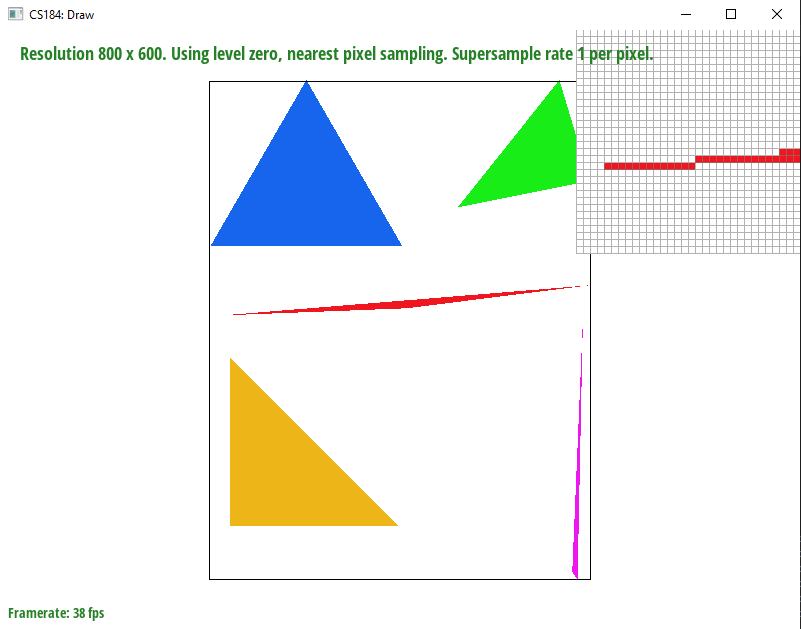

Task 1:
1.1: We rasterize triangles by sampling pixels of the canvas to see if the pixel's center is inside the triangle. If the pixel's center is "inside" the triangle, then we know to fill in the corresponding pixel, and if the pixel's center is "outside" the triangle, then we do not fill in the pixel. Note that there are other ways to sample the triangle's pixels other than this one. In general, rasterization allows us to take the exact, vector/line in space representation of a triangle and turn it into an (estimated) physical representation of the triangle that can be used to display the triangle as a graphic on a screen.
1.2: My algorithm is no worse than one that checks each sample within the bounding box of the triangle because it is computationally the same as one that checks each sample within the bounding box of the triangle. My algorithm calculates the bounding box of the triangle by finding the minimum and maximum x and y values among the three vertex points of the triangle and only checks samples between those min/max x and y values.
1.3:
1.4 [EXTRA CREDIT]: I made my triangle rasterizer faster by factoring redundant arithmetic operations out of loops. Specifically, I moved the dX and dY calculations of the line test equation out of the loop so that they only need to be calculated once. This makes it so my algorithm only calculates the dX and dY between each vertex once instead of calculating it redundantly for every pixel of the bounding box. Using clock(), I found that this optimization made my speed go from about 105 processor time each run to about 95 processor time each run, which is about a 10% speedup. Note that this optimization carries over past just Task 1 and I do it for Task 2, 4, 5, and 6 as well.
Task 2:
2.1: My super sampling algorithm essentially loops through all of the pixels within a bounding box, and for each pixel, it goes through the subsamples of the sampling grid desired and checks if the center of these subsamples is in the triangle or not. This determines if the sub-sample is to be "filled" with the color or not, and once we are drawing to the framebuffer, the colors of the sub-samples are reaggregated together per pixel so that each pixel's color is the average color of the subsamples in the pixel. The data structure I use for this is sample_buffer, which I slightly changed so that the dimension is [width * height * sample_rate] instead of just [width * height]. In this way, sample_buffer no longer represents just the pixels of the canvas, but instead it represents the subsamples of the canvas. Note that I used sample_buffer as a flattened 3D array, so it functionally has these 3 dimensions of height, width, and subsample number even though it is stored just as a 1D array. The other data structure I use is framebuffer, and this is the [width by height] array that actually represents the grid of pixels. Supersampling is useful because it allows for a smoother transition between colors by providing more frequent sampling the higher the sampling rate. This helps us with antialiasing and reducing the visual jaggies because we are essentially creating a higher resolution of the image using more samples than we have pixels and then we "estimate" this higher resolution image in the smaller, original pixel grid by averaging the values. Intuitively, this means that if we have a black triangle on a white background, supersampling makes the image look cleaner because instead of just having strictly black pixels or white pixels, the pixels at the edge of the triangle will be some shade of gray which visually smooths the transition from the inside of the black triangle to the white outside background.
2.2: The results below are observed because without supersampling, it's hard for the binary "colored or not colored" states of the pixels to capture a really skinny part of the triangle, which is why there are gaps in the first image. However, once super sampling is implemented, the pixels are able to sample the triangle at a finer resolution and then average the results to find an intermediary color so that the end result looks visually smooth. Note that the higher the supersampling rate, the better this effect will be, but also the more computation it will take.
Task 3:
3.1: In the image below, I was trying to make cubeman do a handstand.
Task 4:
4.1: Conceptually, barycentric coordinates are a way to redefine the coordinate system to be relative to the vertices of a triangle rather than just the simple x-axis/y-axis coordinate we know. This allows us to define a mathematical way of saying, proportionally, how far a point within a triangle is from each of the vertices. These coordinates allow us to linearly interpolate colored verticies of a triangle to create a smooth gradient. In the image below, one vertex is red, one vertex is blue, and one vertex is green. The gradient that fills the inside of the triangle was calculated with barycentric coordinates, and the color for any given point within the triangle is simply a weighted sum of the colors of the vertices, with the weights being determined by proportionally how far the point is from each vertex. For example, the point in the very middle of the triangle would be weighted with exactly a third of each of the vertices' colors, which we can visually confirm by looking at the image.
4.2:
Task 5:
5.1: Pixel sampling is the idea of sampling from the pixels of an image or texture instead of, say, a mathematical function. How I implemented it to perform texture mapping is that first, for every triangle, I calculated the barycentric coordinates of the point because the dimensions of my canvas are not necessarily the same as the dimensions of the texture and as such, I use barycentric sampling to get the relative positions of the points to the triangles. Then, for the actual sampling of the texture, I implement two different ways to do it. The first is nearest, which simply finds the color of the closest texel to the sample point. The other method I implemented was bilinear sampling, which instead calculates the relative distances of a sample point to the closest 4 texels and then uses these distances to compose the weights for a weighted sum of the 4 closest texels to create a weighted average of the sample so that it ends up being a color that is a proportional blend of the texels around it.
5.2: The four images below show an example of how bilinear sampling can be better than nearest sampling. This is especially prominent with no super-sampling, where bilinear sampling clearly reduces the jaggies aroudn the "Be" of "Berkeley" much more than without. Once we get to 16 supersamples, however, the benefit of bilinear sampling is reduced. It's still better, but the effect is less. I made these images bigger so that it would be easier to spot the differences.
5.3: The relative differences are that nearest sampling requires considerably less computation because it only has to look at one texel whereas bilinear sampling has to look at 4 texels and perform various linear interpolations to get the weighted average color. However, bilinear sampling will look better or equal in most cases because it "smoothes" the pixel color by taking more nearby texels into account. There will be a large difference between the two methods when there are sharp color boundaries. Nearest sampling will create more jaggies and aliased artifacts with sharp color boundaries because it works with limited information (just one nearby pixel) while bilinear antialiasing will look better because it takes into account more texels, which is even more important when adjacent texels vary in color from each other greatly (sharp color boundary).
Task 6:
6.1: Level sampling is changing the resolution of the texture we are sampling from in order to better support the visuals of viewing far away or closer things. I implemented it by building on to Part 5, except that I also calculate the barycentric coordinates for (du/dx, dv/dx), and (du/dy, dv/dy) in order to determine what the level should be. Intuitively, the idea here is that the derivative terms tell us where the pixels change the most, and that helps us to create levels that can optimize the anti-aliasing. I then implemented various levels to use, such as full resolution, or a certain level, or a continous level that is based on a weighted sum of the two closest integer levels.
6.2: For the number of samples per pixel, the antialiasing power is better the higher the number of samples is, but with this comes slower speed and more memory usage. Also, for the parts of the image that are one solid color (excluding the edges), a higher number of samples per pixel wouldn't make any visual difference and still incur the memory and speed costs. For pixel sampling, bilinear sampling has stronger antialiasing power but worst speed and memory usage when compared to nearest sampling. For level sampling, less memory is required for higher levels and continuous LSM is slower because it requires two samples and linear interpolation. As for aliasing, higher level will reduce jaggies and be better at antialiasing, but at the cost of making the image more blurry, and the further an object in the image is from the viewpoint, the better it will look with high level when compared to closer objects.
6.3: